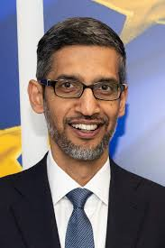

Wear your failures as a badge of honor.
Pichai Sundararajan (born June 10, 1972), better known as Sundar Pichai, is an Indian-born American business executive.He is the chief executive officer (CEO) of Alphabet Inc. and its subsidiary Google. Pichai began his career as a materials engineer. Following a short stint at the management consulting firm McKinsey & Co., Pichai joined Google in 2004,where he led the product management and innovation efforts for a suite of Google's client software products, including Google Chrome and ChromeOS, as well as being largely responsible for Google Drive. In addition, he went on to oversee the development of other applications such as Gmail and Google Maps. In 2010, Pichai also announced the open-sourcing of the new video codec VP8 by Google and introduced the new video format, WebM. The Chromebook was released in 2012. In 2013, Pichai added Android to the list of Google products that he oversaw. Pichai was selected to become the next CEO of Google on August 10, 2015, after previously being appointed Product Chief by the then CEO Larry Page. On October 24, 2015, he stepped into the new position at the completion of the formation of Alphabet Inc., the new holding company for the Google company family. He was appointed to the Alphabet Board of Directors in 2017.
Source: Wikipedia